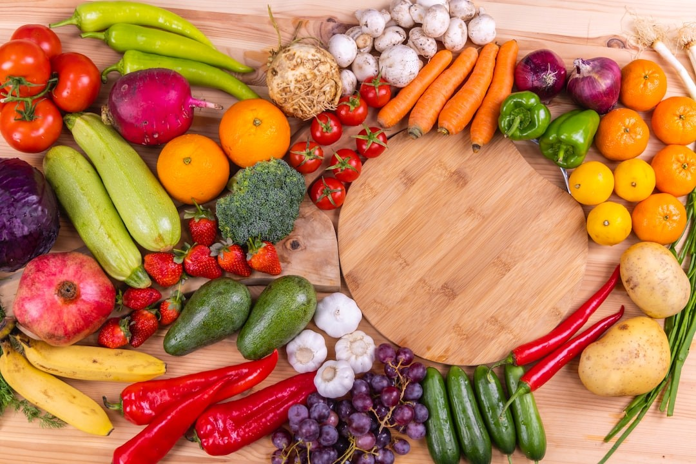
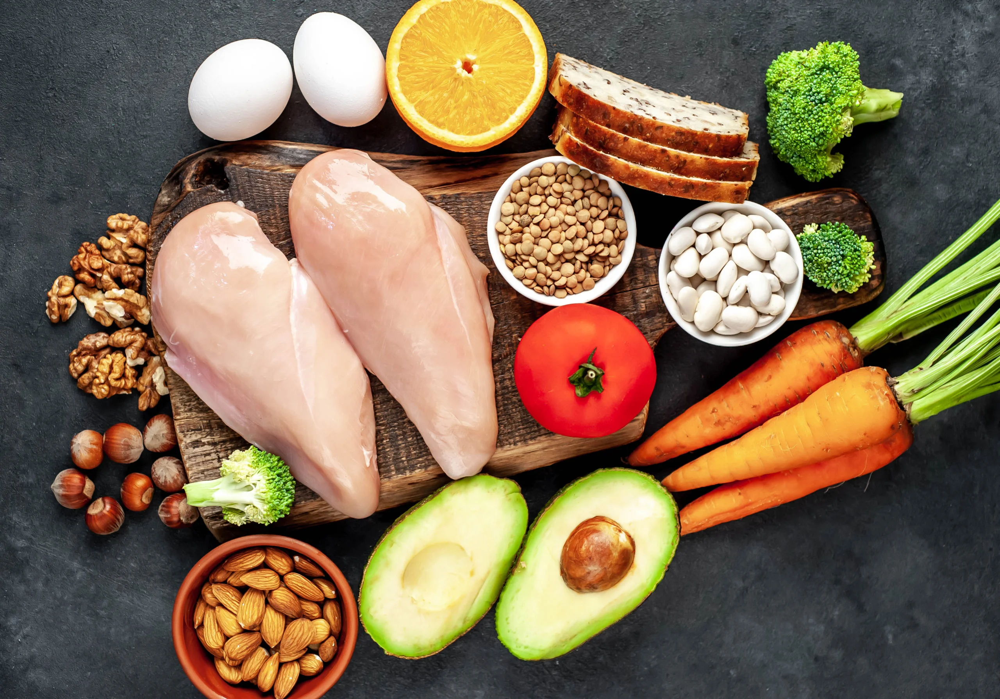

វីតាមីនB3គឺជាវីតាមីនមួយប្រភេទដែលច្រើនមានវត្តមានក្នុងអាហារបំ ប៉ន។ វីតាមីននេះមានប្រយោជន៍ក្នុងការថែរក្សាស្បែក ប្រព័ន្ធរំលាយអាហារនិងប្រព័ន្ធប្រសាទ។ លើសពីនេះ វាក៏ត្រូវបានគេប្រើជាឱសថបន្ថយជាតិខ្លាញ់ផងដែរ។ ទោះបីជាមានប្រយោជន៍ដូចខាងលើក៏ដោយ ក៏វីតាមីននេះនៅតែជាអាវុធមុខ២។

វីតាមីនបេ ៣ (B3) ឬនីយ៉ាស៊ីន មានតួនាទីពិសេសៗដូចជា ផ្ដល់ថាមពល ពេលមានប្រតិកម្មគីមី របស់សរីរាង្គកាយ ។ ផលិតអ័រម៉ូនរាងកាយមនុស្ស ។ ជួយបំលាស់ប្ដូរប្រព័ន្ធប្រសាទ ។ ការពារបេះដូង ដោយវាអាចកាត់បន្ថយកម្រិតជាតិខ្លាញ់ កូឡេស្ដេរ៉ុល និងជាតិខ្លាញ់ទ្រីគ្លីសេរីដនៅក្នុងឈាម ជួយកាត់បន្ថយសម្ពាធឈាមអាកទែរ (ជម្ងឺលើសឈាម) និងអាចទប់ស្កាត់ ជម្ងឺសរសៃឈាមរឹង ។ ជំនួយប្រព័ន្ធរំលាយអាហារ នឹងប្រឆាំងចំងឺរោគរាករូសផងដែរ ។
របបអាហារូបត្ថម្ភប្រចាំថ្ងៃរបស់វីតាមីនបេ ៣ គឺនៅក្នុងមួយថ្ងៃ លោកអ្នកត្រូវទទួលទានវីតាមីនបេ៣ ក្នុងបរិមាណចំនួនពី១១ ទៅ ១៤មីលីក្រាម សម្រាប់មនុស្សពេញវ័យទូទៅ ។ ដោយឡែកចំពោះស្ដ្រីមានផ្ទៃពោះ តម្រូវការវីតាមីនបេ៣អាចកើនដល់ទៅ ១៦ មីលីក្រាម រីឯអ្នកមានជម្ងឺ ឬ ស្ដ្រីបំបៅដោះកូនក៏មានតម្រូវការខ្ពស់ផងដែរ ប្រមាណជា ១៥ មីលីក្រាមក្នុង១ថ្ងៃ។
ការទទួលទានវីតាមីនបេ ៣ មិនគ្រប់គ្រាន់ អាចបណ្ដាលឱ្យលោកអ្នកប្រឈមជំងឺដូចជា ស្បែករបស់លោកអ្នកមានការរបក (ជម្ងឺស្បែក និងភ្នាសមុយកឺ) រោគតានតឹងអារម្មណ៍ ជម្ងឺផ្លូវចិត្ដ អស់កម្លាំង គេងមិនលក់ លែងឃ្លានបាយ រលាកសន្លាក់ ឬវិបត្ដិទឹកចិត្ដជាដើម ។
ចំណីអាហារដែលសម្បូរជាតិវីតាមីនបេ ៣ គឺគ្រាប់ធញ្ញជាតិ ស៊ុតពណ៌លឿង សាច់ត្រី បន្លែក្រៀម មេស្រាបៀ និងកាហ្វេកែច្នៃ ។
ក្រុមមនុស្សដែលត្រូវការជំនួយបន្ថែមពីវីតាមីនបេ ៣ គឺអ្នកដែលអាចប្រឈមនឹងជម្ងឺបេះដូង ជម្ងឺសរសៃឈាមរឹង អ្នកធ្លាប់កើតវិបត្តិគ្រួសារ និងអ្នកដែលមានជាតិកូឡេស្ដេរ៉ុលឡើងខ្ពស់ ។ អ្នកឧស្សាហ៍មានអាការវិលមុខ ហ៊ឹងត្រចៀក ។ ចំពោះស្រ្តីបំបៅកូនដោយទឹកដោះ តម្រូវការអាចឡើងដល់ទៅ ១-៣ ក្រាម ដោយលេបច្រើនដងក្នុង១ថ្ងៃ៕

វីតាមីនB3គឺជាវីតាមីនមួយប្រភេទដែលច្រើនមានវត្តមានក្នុងអាហារបំទោះបីជាមានប្រយោជន៍ដូចខាងលើក៏ដោយ ក៏វីតាមីននេះនៅតែជាអាវុធមុខ២។ អ្នកស្រាវជ្រាវបានរកឃើញថាការប្រើវីតាមីននេះលើសកំរិតអាចបណ្តាលអោយមានការហើមស្រទាប់រេទីនត្រង់តំបន់ស្នាមលឿង(macular edema of the retina) (ជីវវិទ្យាថ្នាក់ទី១២) ហើយធ្វើអោយមនុស្សងងឹតភ្នែក។ វីតាមីននេះលើសកំរិតក៏អាចបណ្តាលអោយពុលដល់ថ្លើមផងដែរ។
អ្នកវិទ្យាសាស្រ្តណែនាំអោយទទួលទានវីតាមីនេB3នេះក្នុងកំរិត 14 mgទៅ 16 mg ប៉ុណ្ណោះក្នុងមួយថ្ងៃ។ អាហារជាច្រើនដែលជាប្រភពវីតាមីននេះ រួមមាន សាច់ (សាច់គោ សាច់ជ្រូក សាច់មាន់ សាច់ត្រី) ស៊ុត ទឹកដោះគោ គ្រាប់ធញ្ញជាតិ អង្ករសម្រូប។
ដោយសារតែមនុស្សម្នាក់ៗអាចទទួលបានវីតាមីននេះពីក្នុងអាហារប្រចាំថ្ងៃ ហេតុនេះការបរិភោគវីតាមីននេះបន្ថែមតាមរយ:អាហារបំប៉នគឺជារឿងមួយដែលគួរតែប្រុងប្រយ័ត្ន។
វិទ្យាសាស្រ្តជីវិតមិនធ្វើការផ្តល់ដំបូន្មានវេជ្ជសាស្រ្តឡើយ។ សម្រាប់កង្វល់ផ្សេងៗ សូមពិគ្រោះជាមួយវេជ្ជបណ្ឌិតឬអ្នកជំនាញផ្នែកវេជ្ជសាស្រ្ត ឬអាហារ។